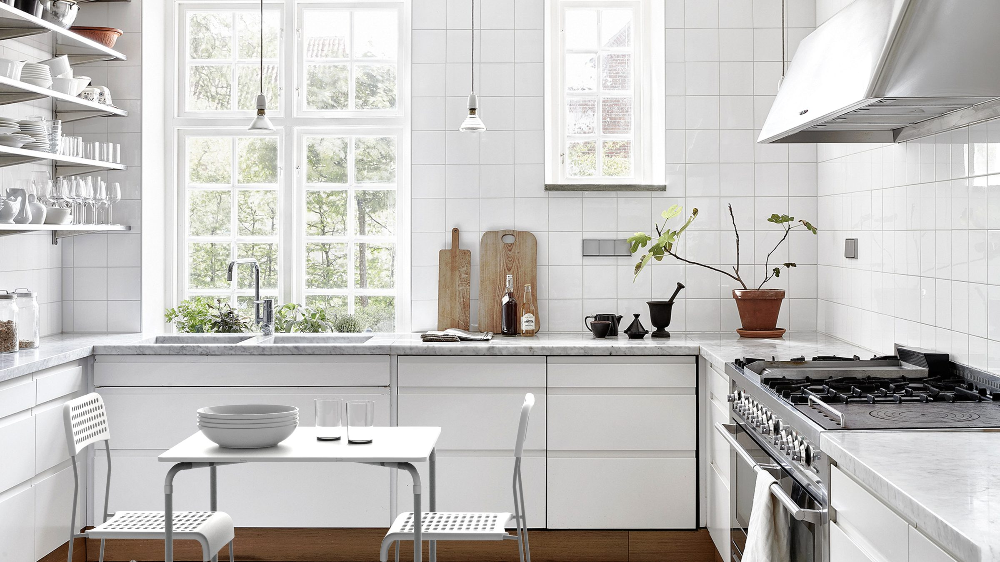
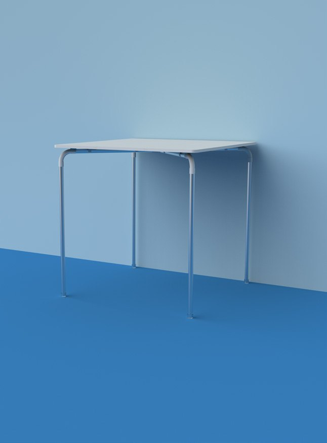
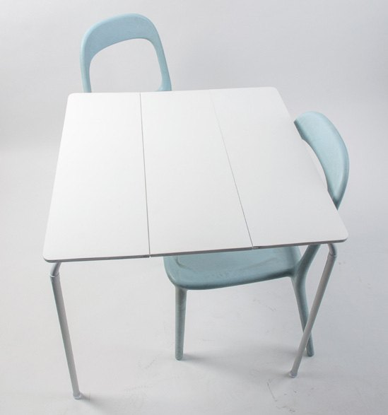
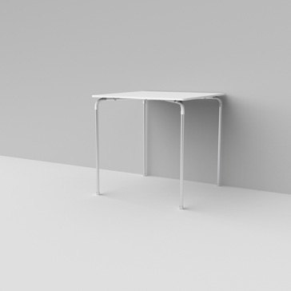
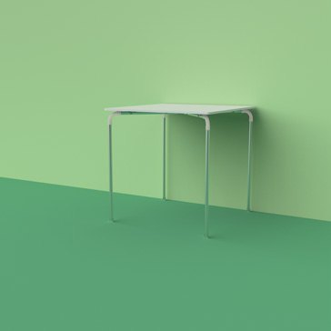
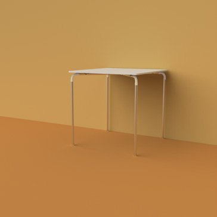
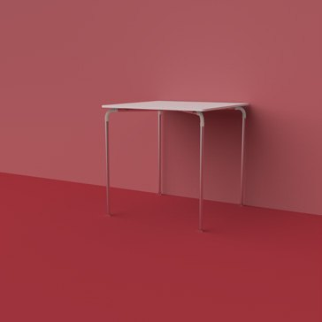
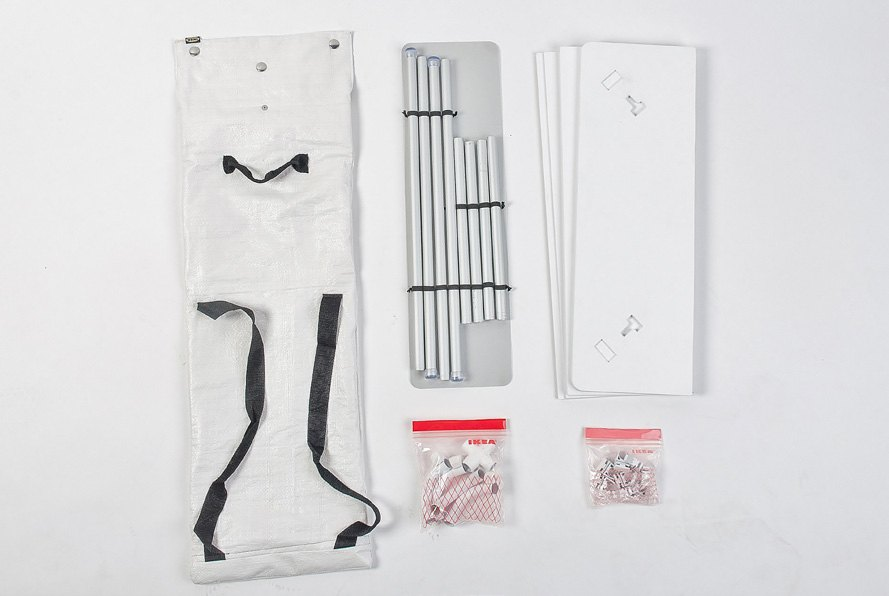
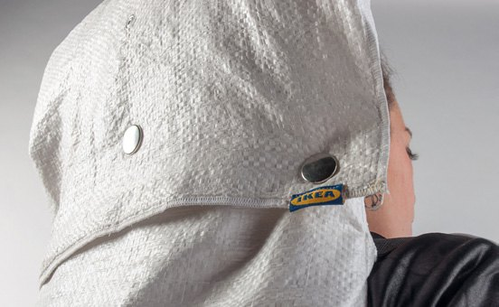

TAAC
«Tavolo ribaltabile, taac.» Come nel Ragazzo di campagna: un tavolo che si monta in pochi minuti e si porta come uno zaino. Concept per IKEA, Laboratorio di Metaprogetto al Politecnico di Milano.


01 — Smontabile, semplice, condivisibile
Dalla cena allo studio, dal gioco agli hobby: un caffè, un libro, due chiacchiere. Il tavolo va dove servono.




02 — Nella sacca
Piano, gambe e minuteria stanno in una sacca con le cinghie: si indossa come uno zaino e il tavolo viaggia con te.

